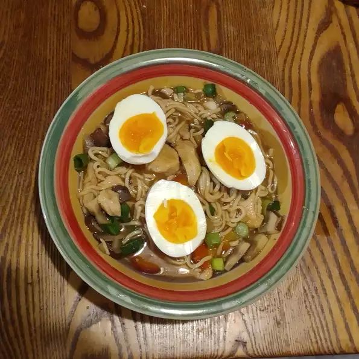

Kostliches Ramen

Description
Ramen sind ebenso wie etwa Sōmen und Udon ,japanische Weizennudeln. Auch die daraus hergestellte Nudelsuppe wird Rāmen genannt.
Ursprünglich stammt das Gericht aus China, wurde aber im 19. Jahrhundert von der japanischen Küche übernommen, angepasst und weiterentwickelt.
Ingredients
- 4 Tassen Wasser
- 8 Unzen geschnittene frische Pilze
- 1 Bund Frühlingszwiebeln, in dünne Scheiben geschnitten, geteilt
- 1 große Karotte, in Scheiben geschnitten
- ½ gelbe Zwiebel, in Scheiben geschnitten
- 2 Esslöffel Sojasauce
- 2 Esslöffel gehackter Knoblauch
- 1 Esslöffel Sriracha-Sauce
- 1 Teelöffel Sesamöl
- 1 Teelöffel Reisweinessig
- ½ Teelöffel gemahlener weißer Pfeffer
- ½ Teelöffel gemahlener schwarzer Pfeffer
- 2 (3 Unzen) Packungen Ramen-Nudeln mit Hühnchengeschmack
Steps
- Kombinieren Sie Wasser, Pilze, 1/2 der Frühlingszwiebeln, Karotte, Zwiebel, Sojasauce, Knoblauch, Sriracha-Sauce, Sesamöl, Reisweinessig, weißen Pfeffer, schwarzen Pfeffer und Aromapakete von Ramen in einem großen Topf. Zum Kochen bringen. Nudeln hinzugeben und unter gelegentlichem Rühren kochen, bis die Nudeln weich, aber bissfest sind, etwa 5 Minuten lang.
- Reduzieren Sie die Hitze auf ein Köcheln und kochen Sie, bis das Gemüse weich ist, etwa 10 Minuten. Mit den restlichen Frühlingszwiebeln garniert servieren.